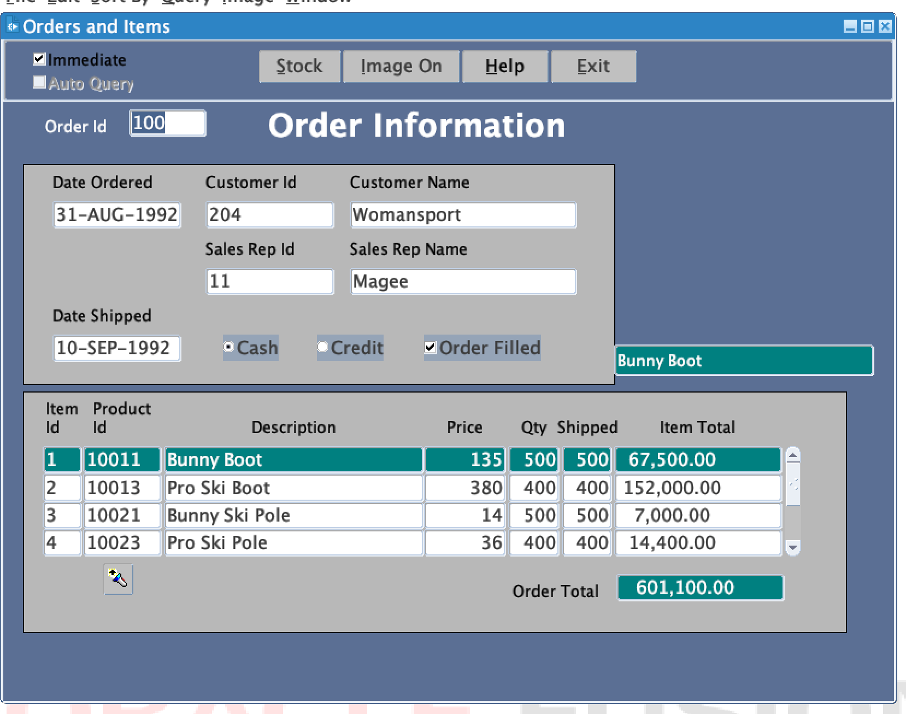
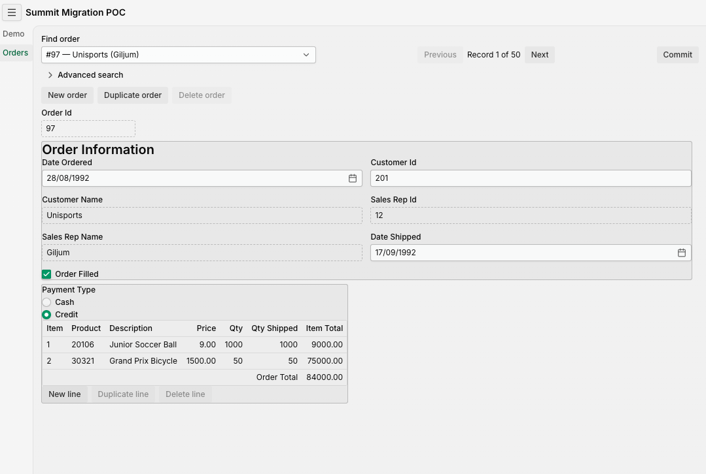
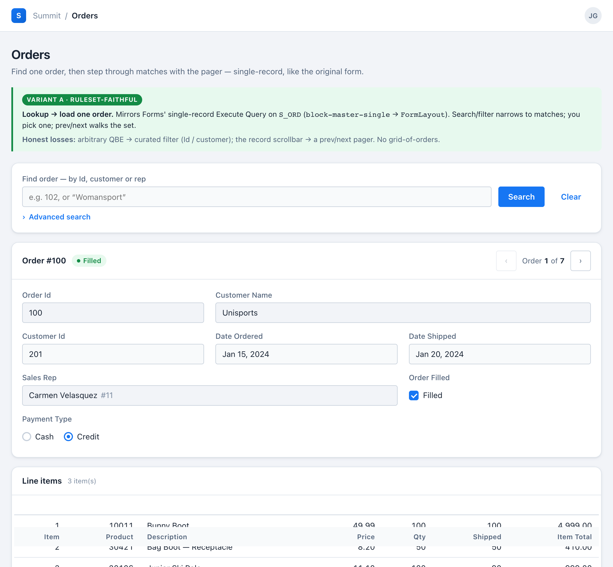

Modernization · Proof of concept
Migrating Oracle Forms to Vaadin with AI
This is the write-up of a time-boxed proof of concept. We took one representative Oracle Forms module, migrated it to Vaadin 25 + Spring Boot 4 using a set of composable AI skills, and then ran the same migration twice more, feeding each pass's corrections back into the tooling.
Two things are worth measuring in an exercise like this: how much of each construct the tooling produces without correction, and which corrections can be encoded as rules that apply to every form rather than as fixes to one. Sections 5 and 6 report both. Section 6 also covers five items that a shipped build was missing while matching the original form on every check in place at the time, and section 7 states what the result does not demonstrate.
Section oneWhat we actually migrated
The subject is the ORDERS form from Oracle's Summit demo
schema: the S_ORD master / S_ITEM detail spine, with trigger-driven
totals, an LOV-backed product lookup, a credit-rating guard and a COMMIT_FORM
locking model. In numbers:
The target is Vaadin 25 + Spring Boot 4, running against the real Oracle database the form itself runs against. Every migrated construct ships behind a Playwright browser test that drives the running app against a real Oracle via Testcontainers, exercising all five layers of the architecture:
Small enough to finish inside a time-box; real enough to hit the seams that actually hurt — optimistic locking, whole-graph commit, lazy-paged lookups.
Before and after


The structure carries over. The "Order Information" heading and its bordered group are there, the fields appear in the form's order (Date Ordered, Customer Id, Customer Name, Sales Rep Id, Sales Rep Name, Date Shipped), Payment Type is still a radio group rather than a text field, Order Filled is still a checkbox, and the line-items grid keeps the same columns and an order total.
What is new belongs to the web: a lookup field and a Previous / Record n of m / Next
pager in place of Execute/Enter-Query and the record scrollbar, an explicit Commit, and
New / Duplicate / Delete actions at both master and line level. What is absent is deliberate — the
Immediate and Auto Query runtime checkboxes and the Stock,
Image On and Help buttons were deferred out of this slice.
The ordered date renders as DD-MON-YYYY in Forms and DD/MM/YYYY in the
migrated view — a format-mask property, not a layout question. (The two screenshots also show
different orders.)
Styling is a separate concern
The view above is deliberately unstyled beyond component defaults: ADR-0008 makes the theme the single owner of visual styling, so Forms' per-field fonts, colours and bevels are dropped rather than translated. Applying a design system is a separate step, and it is what closes the gap between the screenshot above and this:

The distinction matters for reading the rest of this post: structure is migrated, styling is not. Getting that line in the wrong place is what section 6.1 is about.
What is migrated
Three parts, and the second is the one most often assumed wrong.
The same database. Not a copy, not a converted schema, not a new data model.
The Vaadin app connects to the same Oracle instance the form connects to, and reads and writes the
same tables. No schema change — not even to support optimistic locking, which uses
Oracle's built-in ORA_ROWSCN pseudocolumn rather than a version column we add. Nothing
in this project is a database migration.
The PL/SQL in the database is not migrated at all. It stays exactly
where it is and keeps firing. The AUDIT_S_ITEM trigger still writes its audit rows —
inside the Vaadin app's own commit transaction, with zero Java written to make that happen. This is
a deliberate boundary, not an omission: table-level and data-integrity logic belongs to the
database, and moving it into Java would be the mistake.
The PL/SQL in the form is what gets migrated — the 45 triggers,
formulas and summaries that live inside the .fmb. Each one has exactly one of three
fates:
And here is where each construct on the spine actually landed:
| Forms construct | Lands in | As |
|---|---|---|
ITEM_TOTAL formula (quantity_shipped * price) | domain | OrderLine.itemTotal() — pure, unit-tested |
TOTAL summary (Sum) | domain | Order.total(lines) — a stream sum |
PRE-INSERT (MAX(item_id)+1 per order) | domain | Order.nextItemId(), computed over working lines |
WHEN-VALIDATE-RECORD (ship-date guard) | domain | Order.shipDateValid() — in a Binder validator and re-checked on save |
| Credit-rating rule | domain | PaymentEligibility.allows() — a set-membership check |
| Delete cascade guard (non-isolated relation) | domain | Order.hasLineItems() + CascadeDeleteBlockedException |
WHEN-VALIDATE-ITEM (product defaulter) | presenter + service | applyProductDefaults(); NO_DATA_FOUND → RAISE becomes a rejected field |
WHEN-VALIDATE-ITEM (customer lookup) | presenter + service | lookupCustomer() |
COMMIT_FORM | service | OrderService.save() — one @Transactional whole-graph save |
| Pessimistic lock across think-time | service + data | optimistic ORA_ROWSCN re-check, no schema change |
AUDIT_S_ITEM table trigger | stays in db | untouched; fires inside the Vaadin commit |
get_product_image function | dissolves | the lookup query already fetches the row |
POST-QUERY display re-fetches | dissolves | folded into JOINs in the load path — no N+1 |
The boundary rule in one line: table-level and data-integrity logic stays in the
database; form-serving logic moves to the Java layers; logic the new architecture absorbs simply
dissolves. The domain formulas quote almost 1:1 from the original PL/SQL —
itemTotal() is literally price × quantityShipped.
Summit is a teaching demo, so its business logic is deliberately simple. Section 7 quantifies that, and says what it means for how far the result generalises.
Section twoWhy this is hard, and why a naive port misses it
An .fmb is not a UI layout. It is a dense bundle of:
- blocks bound to base tables, with master-detail relations that keep a header and its lines navigating together;
- triggers carrying validation, defaulting, query and commit logic in PL/SQL;
- items whose type carries meaning — a Radio Group says "small fixed choice", an LOV says "lookup", a Display Item says "computed, read-only";
- frames and boilerplate text that group fields and title sections;
- LOVs and record groups backing type-ahead lookups;
- a locking and commit model —
COMMIT_FORMflushes the whole master-detail graph as one unit.
A migration that only looks at the screen drops most of this silently. The interesting work is deciding, construct by construct, what each of these becomes on the web — and being honest about what doesn't survive the trip.
Runtime behaviour that is not in the file
Everything above is in the .fmb, so a good analyzer can inventory it. The
harder problem is that Oracle Forms is a runtime, and a large part of what your users
experience as "the application" is behaviour that runtime provides implicitly. It is
nowhere in the XML export. There is no element to count, no trigger to read — it is simply how
Forms works, documented in Oracle's manuals and known by your developers.
In Forms, a WHEN-VALIDATE-ITEM trigger that raises
FORM_TRIGGER_FAILURE keeps the cursor in the field. You cannot leave
until the value is valid. Validation is not a message shown next to an input — it is a modal gate
wired into the navigation model, cascading item → record → block → form as the cursor moves. The
web has no such thing, and simulating it faithfully would produce an app nobody wants to use.
Every one of these has to be re-decided rather than translated:
| Forms runtime behaviour | What the web does instead | The seam you must document |
|---|---|---|
| Validation blocks navigation — invalid field traps the cursor | Field is flagged; the user can move on, but save is gated | You can leave an invalid field; you cannot commit one |
| Enter-Query is a modal runtime state — keystrokes change meaning | A persistent filter bar | Arbitrary query-by-example lost; curated, discoverable filters gained |
| Row locked on first keystroke, held across think-time | Optimistic ORA_ROWSCN re-check at commit |
Conflicts surface at save, not at edit |
| Exactly one "current record", walked with a record scrollbar | Single-select grid with deselect disabled + a prev/next pager | Fidelity kept, but the scrollbar idiom is gone |
| Trigger firing order — item → record → block → form, on cursor movement | Explicit orchestration in the presenter | The cascade must be re-derived by hand; nothing declares it |
MESSAGE() on a fixed console line, blocking alerts |
Notifications and dialogs | Different attention model entirely |
| F7 / F8 / F10 keyboard model | Buttons and actions | Muscle memory does not transfer |
This matters more than it first appears, and it is worth being blunt about: no analyzer can count what is not in the file, and no completeness census can prove you handled it. The method's guarantee is scoped to the form's contents; the runtime semantics have to come from someone who knows what Forms actually does — which is precisely why human sign-off is a separate output rather than a formality (section 6.2), and the same shape as the finding in section 6.3: a guarantee about the file cannot cover behaviour that was never in the file.
Section threeGoals — and non-goals
We are not claiming AI rewrites your forms. The goals were narrower and measurable:
- Find out how much of each construct AI does unaided.
- Measure the ratio of generalizable to specific fixes — because that ratio is a Forms shop's automation ceiling (more on this in section 5).
- Locate the places where "faithful migration" and "good web app" pull against each other, and document those seams instead of papering over them.
- Prove the database is untouched. No schema change. That is the first thing a DBA will test, and it has to hold.
Pixel fidelity — visual styling is deliberately dropped, the theme owns it (ADR-0008). The whole form — we took the spine. A finished product. And migrating the database logic that should stay in the database.
What a Forms shop can actually act on is a classified migration backlog — recommended target per construct, decisions flagged, nothing dropped. Not a finished app.
Section fourThe workflow
4.1 The pipeline
One form, end to end. Each step consumes the previous one's output.
| Step | What runs | Output |
|---|---|---|
| 0 | frmf2xml | <FORM>_fmb.xml |
| 1 | forms-xml-analyzer — decision-free structural spec | <FORM>.spec.json |
| 2 | to-prd — the Vaadin and architecture decisions enter here | a PRD |
| 3 | disposition-ledger gate → construct-grain tickets | ready-for-agent issues |
| 4 | implementation — can run unattended | Vaadin view + tests |
| 5 | migration-review — human sign-off | ready-for-human tickets |
Step 3 is not bookkeeping. Clustering to construct grain is the architectural-decision step: roughly seven tickets an architect recognizes — master block, detail block, filter bar, LOV, totals, locking model — rather than a wall of forty "migrate KEY-NEXT-ITEM" non-tickets.
4.2 Unopinionated, then opinionated
The split between steps 1 and 2 is the load-bearing design choice.
The analyzer records what the form is: every block, item, trigger, relation,
LOV and frame, verbatim. It has no Vaadin knowledge and makes no migration decisions — a Formula
item's expression is captured, not translated. The PRD then decides what it
becomes, from two published inputs: the mapping ruleset
(migration-rules.yaml) and the ADRs. A different target architecture produces a
different PRD from the same spec.
An example: one radio group. The ORDERS form has a
PAYMENT_TYPE item — Cash or Credit, defaulting to Cash, with a trigger that refuses
Credit for customers whose credit rating isn't good enough.
step 1 · what the analyzer records
Trimmed, but otherwise verbatim from ORDERS.spec.json.
Note what is not in there. The word "Vaadin" appears nowhere. No component is
chosen. The PL/SQL body is stored as text — the analyzer does not decide that this trigger
"is a credit check", only that it exists, that its shape is a select-into, and what it
says. Even geometry is recorded rather than judged, because deciding whether pixels
matter is not the analyzer's job.
step 2 · where every fact gets a fate
| What step 1 recorded | What step 2 decided | Where that decision came from |
|---|---|---|
itemType: "Radio Group" | a RadioButtonGroup | ruleset rule radio-group |
the two radioButtons + labels | the group's two options, Cash / Credit | same rule |
initializeValue: "CASH" | Order.blank() defaults payment type to Cash | the property rides into the domain factory |
the WHEN-RADIO-CHANGED body | a pure domain rule — PaymentEligibility.allows(), a set-membership check against {GOOD, EXCELLENT} | ADR-0001: business logic lives in the domain layer |
SHOW_ALERT('Payment_Type_Alert') | a Notification shown when credit is refused | ruleset alert mapping |
geometry | dropped — but field order and grouping preserved | ADR-0008 (theme owns styling) + ADR-0012 (structure is not styling) |
prompt: "Payment Type" | the component's own label — the separate boilerplate text object dissolves | ruleset boilerplate rule |
maximumLength: "6" | nothing. A radio group cannot overflow | dissolves |
Two points follow from this example. First, the same file yields different decisions
under a different architecture: change ADR-0001 to say business logic lives in the service
layer, or drop ADR-0008 so styling is translated, and step 2 produces different answers
from a byte-identical step 1. That is how you test whether a spec is genuinely
decision-free. Second, one small item carries a large amount of decision surface: this radio group
generates five rows in the disposition ledger described in section 6.4, including
one for the CASH default, which a screen-level review would not normally check.
That separation is also what makes a correction routable. When generated code is wrong, you can say which box failed: bad ticket → fix the ruleset; ticket right but code buggy → fix the execution skill; irreducible form quirk → hand-fix and touch no skill. A single black box makes that diagnosis impossible, and without the diagnosis nothing downstream compounds.
4.3 The inner loop: per construct
Riskiest construct first, while a rebuild is still cheap:
- Generate the construct from its ticket.
- Validate against the live Forms app — the behavioural oracle.
- Diagnose which layer failed (the routing above).
- Sort the fix — generalizable or specific.
Two rules keep this from becoming a grind. Cap refinement at about two passes per construct. And if a construct won't converge, stop and write it up: non-convergence is the most valuable finding, not a reason to keep pushing.
Section fiveSorting corrections: generalizable or specific
Every correction you make to AI-generated code is one of exactly two things.
A rule the tool should have known. You push it back into the mapping ruleset, and it now works for every form, forever.
An irreducible quirk of this form. You hand-fix it, log it, move on. It teaches the tool nothing.
The reusable asset is the accumulated generalizable set; it gets smarter every time a fix is sorted correctly. And one rule keeps the whole thing honest: a fix is "specific" by default. It only earns generalizable status when the rule behind it can be stated in form-construct terms — "any table-level audit trigger stays in the database", not "the ORDERS header needed an extra field". That conservatism is exactly what separates a reusable ruleset from one quietly overfit to Summit.
Section sixThree iterations, three different lessons
We ran the whole migration three times. Crucially, each pass is not a patched version of the last one: after sorting every correction and pushing the generalizable ones into the ruleset and the skills, the entire slice was regenerated from scratch. So each pass is what the smarter tool produces on the same form — which is what makes the compounding measurable rather than merely asserted.
| Pass | What changed in the tool | What it caught | What it still missed |
|---|---|---|---|
| v1 | First full attempt | A working spine — and the counted ≠ rendered gap, found mid-build | Layout drift shipped before anything caught it |
| v2 | Layout fidelity front-loaded; record actions became a rule; human judgment became an up-front output | Whole capability families arrived for free; the spine finished | Four features that had spec data and a rule, never built |
| v3 | A disposition ledger gating ticket-cutting at property grain | All four losses, by construction, before code exists | Designed, never built — unproven at scale |
6.1 v1 — the spec census does not prove the screen is right
The migrated ORDERS header shipped with its fields reordered, its bordered
"Order Information" group gone, its section title missing, and
PAYMENT_TYPE flattened from a radio group to a text field.
183 elements, nothing dropped.
The root cause was over-reach in a rule we'd written on purpose. Dropping visual styling was correct; dropping field geometry wholesale was not — because geometry encodes structure (order, grouping), not just pixels. Only the pixels were the theme's to drop.
Two corrections came out of it, both now first-class rules. ADR-0012:
structural layout fidelity is migrated — field order, frame grouping and section
titles preserved, and a view is not done until a layout-fidelity test asserts
every in-scope item, frame and heading renders, in the form's order, as its mapped component type.
ADR-0013: read-only is a state, not a component type — a
read-only slice still renders a disabled RadioButtonGroup, not a
TextField printing CASH.
This applies beyond this form: a test that asserts only behaviour passes even when the screen is wrong, so layout fidelity needs a separate gate.
6.2 v2 — regenerating with the corrected ruleset
Three of v1's corrections generalized, and each traces from a v1 hand-fix, into the tool, to a v2 payoff.
Layout fidelity. In v1 this was found mid-build and retrofitted. In v2 the gate is part of the first structural slice.
Record actions: a hand-fix that became a ruleset rule. In v1, "create a new order" was a one-off hand-written flow on the presenter, there
was no Duplicate at all, and although a delete path existed in the service it was
never wired to a visible control. A classic un-sorted hand-fix: it made this form work
and taught the tool nothing. Sorted, the rule states in form-construct terms — any base-table
block whose CRUD capability permits insert/delete gets New / Duplicate / Delete record actions,
whether or not a KEY-CREREC / KEY-DUPREC / KEY-DELREC
trigger exists. v2 regenerated against that rule and got the whole family for free, at master
and line level, with Delete correctly composed against the non-isolated
cascade-delete guard. One hand-fix became a capability every subsequent form inherits.
Human judgment as an explicit output. Work that turns on a judgment an agent is not entitled to make became a separate, up-front deliverable rather than something handled reactively during the build (ADR-0014) — the mechanism is the review skill described in section 6.3.
v2 also finished the spine — the product LOV defaulter, master-header editing with the
credit-check and ship-date guards, and the whole-graph COMMIT_FORM save under an
ORA_ROWSCN optimistic-lock check. Read the SCN on load, re-check it in
UPDATE … WHERE id = ? AND ORA_ROWSCN = ?; zero rows updated means a conflict, so roll
back. No schema change.
6.3 v3 — traceability from spec fact to test
v2 matched the live form on the spine flow. To check whether that was enough, the
migration-review skill audits a shipped build against the structural
spec: it walks every decision-prone fact — defaults, editability modes, cross-form contracts, and any
"this form has no X" claim in the code — and asks whether the build consumed it, rather than
whether the application looks right. Its findings become ready-for-human tickets.
Run against v2, it found five items:
| What was absent from the build | Kind of fact |
|---|---|
GLOBAL.customer_id — ORDERS can be launched already filtered to a customer; three triggers read, default from, and clear it | cross-form contract |
DATE_ORDERED should default to today ($$date$$) | default value |
QUANTITY_SHIPPED is editable while a line is new, read-only once saved | editability mode |
SALES_REP_ID was made read-only — correct, but never recorded as a deviation from the spec's "editable" | undocumented re-decision |
A comment asserting "S_ORD has no WHEN-CREATE-RECORD", which nothing checked against the spec. It has one | false absence claim |
All five were present in the spec, and four had a matching ruleset entry. The tooling was not missing a rule; nothing consumed the fact. Every check in place at the time passed:
| Check | What it proved | Why it missed these |
|---|---|---|
| Spec census (183 elements) | every node counted | counted is not consumed |
| Tickets and scorecard | "migrate the master block" | construct grain is too coarse to see one property inside a construct |
| Deferred-surface lane | whole surfaces tracked | tracks surfaces, not properties |
| Layout-fidelity gate | every field renders, in order | a default has no visible absence |
6.4 v3 — the traceability chain
v3 adds no new mapping rules. It adds a link from every decision-prone spec fact to the ticket that implements it and the test that asserts it, and it refuses to generate tickets until that link exists:
:GLOBAL contract
151 rows for ORDERS
Covers: row ids+ per-field fidelity matrix
Gate — no tickets are generated while any ledger row is unassigned.
--check-refs — verifies cited tickets exist and deferred rows stay open.
Read left to right it is a specification; read right to left it is an audit trail. The two ends
are what the previous passes lacked: a fact with no ledger row could not be missed before v3
only because nothing was looking, and a migrated-as row with no test proves the property
was decided, not that it was delivered.
The four dispositions a row may carry:
| Disposition | Meaning | Also recorded on the row |
|---|---|---|
migrated-as | built, with the web behaviour named | the ticket or PR that carries it |
re-decided | deliberately different from Forms | the rationale and who decided |
deferred | accepted, not in this slice | an open tracking ticket |
obsolete | Forms-runtime plumbing with no web counterpart | the rule id that dissolves it |
The practical effect is on the ticket. The implementer builds against a matrix of field properties instead of interpreting a paragraph; the reviewer checks a named list of rows instead of re-reading the form to work out what should have been there. The same construct, specified under each version — note that #45 shipped, while #91 is the ticket as v3 generates it, not one that was built (see section 7):
- no ledger rows covered
- field fidelity described in prose
QUANTITY_SHIPPEDnot mentioned- Acceptance — a checklist
QUANTITY_SHIPPED insert-only
- Covers — 12 ledger row ids
- Field fidelity — a per-field matrix
QUANTITY_SHIPPED— insert-only: editable while new, read-only once saved- Acceptance — a checklist + a UI test asserting it
The v2 ticket had no field in which that property could appear, so its omission was not visible to the implementer or the reviewer.
6.5 Summary of the three iterations
v1 → v2 shows generalizable fixes accumulating in the ruleset. v2 → v3 extends the completeness guarantee from the form's contents to the migration's contents: "nothing dropped silently" now holds at three levels — the spec census (every element accounted for), the slice boundary (every deferred surface tracked), and migration content (every decision-prone property carries a disposition, backed by a test or a tracked defer).
Section sevenLimitations
Four qualifications bound everything above.
The PRD, the 151-row ledger and ADR-0015 exist on master; the v3 build tickets
never landed. Every claim that the ledger would have caught those four losses is a
paper claim until someone runs it.
Summit is Oracle's demonstration schema, and its business rules are deliberately
uncomplicated. The whole form is about 500 lines of PL/SQL, roughly half of it Oracle-generated
master-detail boilerplate; of the hand-written remainder, about 34 of 45 triggers are a single
built-in call, assignment or SELECT INTO. There are zero PL/SQL
packages, no dynamic SQL, no cursors over large sets, no package state and no differentiated
error handling, and the one trigger that rises to moderately complex was deferred out of the
slice.
The AI interpreted that logic accurately — every trigger and formula on the
spine has a traceable Java counterpart, and the domain methods quote almost 1:1 from the PL/SQL.
That result stands. What it does not tell us is whether the same holds for production logic:
domain rules living in stateful DB packages, dynamic DEFAULT_WHERE query building,
validation that accumulates several errors before failing,
ON-INSERT/ON-UPDATE transaction overrides. We did not find a
form like that to try — so this is an untested case, not a failed one, and section 9
names it as the experiment that would settle it.
Multi-canvas topology was never exercised — the other two canvases were deferred. And
OrderView.java is about 1,158 lines, mixing structure and event
wiring. Fine on a demo; a maintainability cliff at five times the fields.
151 rows for a 34-item demo plausibly means thousands for a real module. Who assigns dispositions to 3,000 rows without rubber-stamping? And "which properties are decision-prone" is itself a judgment — which arguably reintroduces the silent-loss risk one level up. Worth noting too: the four losses were caught by a retrofit audit, not by the ledger.
The part that looks least glamorous: the architecture and concurrency work. Whole-graph
transactional commit with a validate-gate first and the SCN-guarded header UPDATE
as the first write, so a conflict leaves the database untouched. Optimistic locking translated
from Forms' pessimistic-across-think-time model with no schema change. Business rules in pure,
unit-testable domain types. The AUDIT_S_ITEM trigger left in the database, firing
transparently inside the commit's transaction, zero Java written.
That's the real engineering, and it holds.
Section eightHow to try it
Tier 1 — guaranteed. Clone, docker compose up,
mvn spring-boot:run. The Summit slice runs against a self-contained Oracle Free
container seeded from a committed dump (75 tables, ~54k rows; the POC slice loads intact). A
stranger needs Docker — not an Oracle licence, and not your Forms database.
Tier 2 — honest. The skills, the mapping ruleset and the ADRs. Applied to your form, the method gives you a classified migration backlog — recommended target per construct, decisions flagged, nothing dropped. Not a finished app.
Stated plainly: this reproduces the Summit migration exactly; on your own form it produces a documented starting point rather than a finished product, and it identifies where the remaining work is.
Section nineOpen questions and next experiments
Two experiments would test the parts that are currently unproven.
Build v3. Prove the four ledger rows force the four missing features into existence. That is the only real proof the gate works, and it is cheap — the plan already exists.
Then run the method on a form with real PL/SQL: logic living in a stateful DB
package, dynamic DEFAULT_WHERE query building,
ON-INSERT/ON-UPDATE overrides, validation that accumulates multiple
errors before failing. That last one is where the whole-graph save() assumption
breaks.
The hypothesis: formulas migrate straightforwardly at any scale, and what breaks first in a production application is packaged, stateful logic that the layer boundary cannot hold, followed by the volume of decision-prone properties exceeding what a ledger can usefully track.
Implications for a Forms estate
- AI does a large fraction of each construct unaided, and that fraction is measurable.
- Corrections sort cleanly into teach the tool once versus fix this one form by hand — and the first bucket compounds across your whole estate.
- The genuinely hard parts — arbitrary query-by-example, modal validation semantics, pixel fidelity — are knowable in advance and small in number. You can plan around them instead of discovering them mid-project.
- And the failure that should scare you is not the loss you argue about in review. It is the one nobody noticed was gone.
The generalizable-to-specific ratio is the measurable number, and this POC is a way to establish it on one form before committing to a migration programme.
Built with Vaadin 25, Spring Boot 4, Oracle Free, and a set of composable AI migration skills. The mapping ruleset, the ADRs behind every decision above, the full ORDERS spec and the disposition ledger are all in this repository.